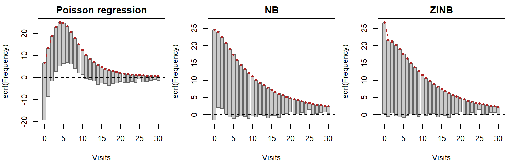
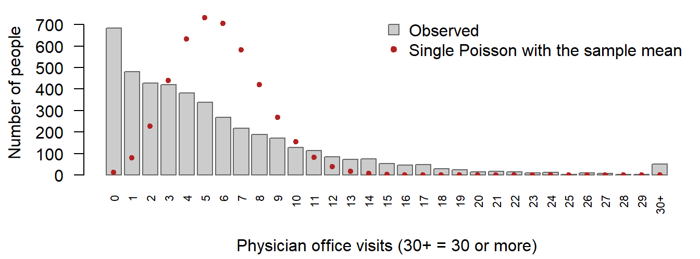
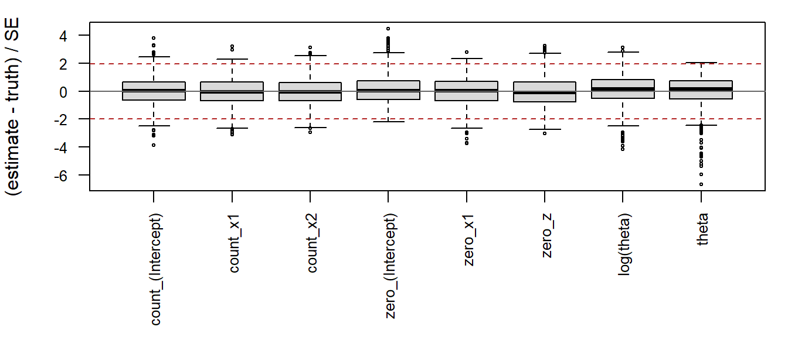

Code
# install.packages("devtools")
devtools::install_github("jaxsonbugg/nbzinbreg")STA 651 Final Project, Fall 2026
November 13, 2026
Source:vignettes/articles/report.qmd
Download the PDF For how to use the package itself, see the Usage guide.
Many responses in applied work are counts: the number of doctor visits in a year, articles published, defects on a production line. The standard model for counts is Poisson regression, which assumes that the variance of each count equals its mean. Real counts are usually more spread out than that, which is called overdispersion, and they often contain more zeros than a Poisson model allows (Cameron and Trivedi 2013). Ignoring either problem gives standard errors that are too small and predictions that miss the zeros.
Two models address these problems. Negative binomial (NB) regression adds a dispersion parameter , so the variance becomes . The zero-inflated negative binomial (ZINB) model goes further: it treats the data as a mixture of a group that always produces zeros and a group whose counts follow an NB regression (Lambert 1992). In R, these models are usually fitted with MASS::glm.nb() (Venables and Ripley 2002) and pscl::zeroinfl() (Zeileis et al. 2008).
This project builds an R package, nbzinbreg, that fits both models without any general-purpose optimizer. The NB model is fitted by iteratively reweighted least squares (IRLS) for the regression coefficients, alternated with Newton–Raphson for . The ZINB model is fitted by an EM algorithm whose M-steps are IRLS fits. The report describes the methods (Section 2) and the package (Section 3). It then shows that the package reproduces glm.nb() and zeroinfl() (Section 4) and that zinbreg() recovers known parameters in a simulation (Section 5). It analyses physician visits in the NMES1988 data (Section 6) and ends with a discussion of limitations (Section 7).
The NB model. For counts with covariates , an optional offset and prior weights (1 for an ordinary fit), the NB2 model has mean with linear predictor , and log-likelihood
This is the parameterization of glm.nb(). As the model becomes the Poisson.
IRLS for with fixed. With held fixed, the NB model is a generalized linear model with log link and variance function . Fisher scoring for such a model is the same as repeating a weighted least-squares fit, with weights and a “working response”
The solution is computed from the QR decomposition of , not by inverting . A step that would lower the log-likelihood is halved back towards the current .
Newton–Raphson for with fixed. Write and for the first and second derivatives of Equation 1 in ; they involve the digamma and trigamma functions. The update works on , which keeps positive:
If is not negative (the log-likelihood is not hill-shaped there), a scaled uphill step is used instead, and every step must pass a line search that guarantees an increase in the log-likelihood.
The NB outer loop and standard errors. The fit starts from a Poisson IRLS fit and a moment estimate of , then alternates Equation 2 and Equation 3 until the relative change in the log-likelihood is below and the coefficients and have stopped moving. As in glm.nb(), , treating as known, and .
The ZINB model. Each person is a structural zero with probability , with ; otherwise the count follows the NB model above. With the NB probability of a zero, the observed-data log-likelihood is
The first sum mixes the two sources of zeros inside a logarithm, so the ZINB model is not a GLM and cannot be fitted by IRLS directly.
EM. If we knew which zeros were structural, the model would split into two ordinary regressions. The EM algorithm (Dempster et al. 1977) treats that label as missing and alternates two steps. The E-step computes, for each zero, the probability that it is structural, given the current estimates:
The M-step then fits the two regressions with these probabilities as weights. The zero part is a logistic regression of the fractional response on , fitted by IRLS; each round solves with , the same Fisher-scoring step written so that nothing is divided by , which can underflow. The count part is exactly the NB fit above, with prior weights , so the NB code is reused. All of these quantities are computed on the log scale.
Monotonicity and convergence. EM can never lower the observed-data log-likelihood. The package checks this at every iteration, together with each M-step’s own objective, and a decrease (beyond rounding) is reported and blocks convergence; the check cannot be switched off. EM converges slowly near the maximum, so small changes alone are a poor stopping rule: the fit stops only when the relative change in the log-likelihood is below , the parameters are stable, and the Newton decrement (with and the gradient and Hessian of Equation 4) is at most . This establishes approximate stationarity. can only be computed where is positive definite, so a converged fit also has negative definite curvature: a local maximum, not necessarily the highest one.
Standard errors for ZINB. EM gives no standard errors. They come from the inverse of the observed information, , the negative Hessian of Equation 4 in at the estimates. The package computes analytically, from closed-form derivatives of each observation’s contribution, and offers numDeriv::hessian() of our own log-likelihood as an option; the two agree to about . Before inverting, the Hessian is checked to be finite, symmetric and negative definite. As in zeroinfl(), is reported with its standard error, and with the delta-method standard error .
The package is installed from GitHub:
# install.packages("devtools")
devtools::install_github("jaxsonbugg/nbzinbreg")nbreg() and zinbreg() take formula, data, offset, control in that order, as the project requires. A zinbreg() formula has the form y ~ x1 + x2 | z1 + z2, with the count covariates before the bar and the zero covariates after it. nbreg_control() and zinbreg_control() set the tolerances, iteration limits, tracing and the Hessian method. Both classes have print, summary, coef, vcov, logLik (so AIC() and BIC() work), fitted, residuals (response and Pearson), nobs and predict with newdata (for ZINB the types response, count, zero and prob, with standard errors). Beyond the requirements, the package offers confint() with a profile interval for , anova(), overdispersion_test(), vuong_test() with a parametric bootstrap test of NB against ZINB, expected_counts(), rootogram(), simulate(), boot_se(), tidy() and glance().
A short example, with the bioChemists data used in the project handout:
count_(Intercept) count_femWomen count_marMarried count_kid5
0.404 -0.212 0.139 -0.168
count_phd count_ment zero_(Intercept) zero_ment
0.002 0.024 -0.807 -0.609
theta
2.726 Design and testing. The user-facing functions check every input and give classed errors that say how to fix the problem; the numerical engines never warn but return flags (for example at its Poisson-limit bound), and the ZINB count M-step reuses the NB engine. The tests, run on five platforms in GitHub Actions, compare both models with glm.nb() and zeroinfl(), check offsets, single-covariate models, bad input and the analytic Hessian, and read the package’s own code to fail if any function calls a prohibited optimizer or fitter, directly or indirectly.
The package should reproduce MASS::glm.nb() and pscl::zeroinfl(dist = "negbin"). Each model is fitted to two data sets with both implementations: pscl::bioChemists (915 PhD students; response art; fem + mar + kid5 + phd + ment in the count part and, for ZINB, in the zero part, as in Appendix A of the project description) and AER::NMES1988 (the models of Section 6). Our functions run at their default settings; the references run with tight tolerances (glm.control(epsilon = 1e-10, maxit = 100), zeroinfl.control(reltol = 1e-12)), so that their own stopping error is negligible. Agreement then shows that both implementations reach the same tightly converged estimates; it does not show that these are the global maximum of the likelihood. For every coefficient, standard error, theta (log theta for ZINB, as zeroinfl() estimates it) and the log-likelihood, the maximum absolute difference |ours − reference| is compared with the required tolerance: 1e-5 for NB coefficients and standard errors, 1e-4 for NB theta and log-likelihood, and 1e-3 for every ZINB quantity.
A comparison is only meaningful if both fits are valid, so each pair is checked first: both converged (for zinbreg() including the gradient check), every estimate and standard error is finite, both use the same observations and parameter names, and both covariance matrices are symmetric and positive definite. All 10 checks passed for each of the four pairs. The side-by-side tables of every estimate and standard error are in the appendix (Table 6, Table 7, Table 8 and Table 9).
Table 1 collects the maximum absolute differences and compares them with the required tolerances.
| Data | Model | Quantity | Max. abs. difference | Tolerance | Met |
|---|---|---|---|---|---|
| bioChemists | NB | coefficients | 5.6e-08 | 1e-05 | yes |
| bioChemists | NB | standard errors | 5.9e-10 | 1e-05 | yes |
| bioChemists | NB | theta | 2.2e-08 | 1e-04 | yes |
| bioChemists | NB | log-likelihood | 6.8e-13 | 1e-04 | yes |
| bioChemists | ZINB | coefficients | 4.8e-05 | 1e-03 | yes |
| bioChemists | ZINB | standard errors | 2.8e-05 | 1e-03 | yes |
| bioChemists | ZINB | log(theta) | 4.0e-06 | 1e-03 | yes |
| bioChemists | ZINB | log-likelihood | 4.2e-09 | 1e-03 | yes |
| NMES1988 | NB | coefficients | 3.4e-07 | 1e-05 | yes |
| NMES1988 | NB | standard errors | 9.2e-10 | 1e-05 | yes |
| NMES1988 | NB | theta | 7.8e-09 | 1e-04 | yes |
| NMES1988 | NB | log-likelihood | 1.1e-10 | 1e-04 | yes |
| NMES1988 | ZINB | coefficients | 1.4e-05 | 1e-03 | yes |
| NMES1988 | ZINB | standard errors | 6.4e-06 | 1e-03 | yes |
| NMES1988 | ZINB | log(theta) | 2.3e-06 | 1e-03 | yes |
| NMES1988 | ZINB | log-likelihood | 2.6e-09 | 1e-03 | yes |
Every required quantity is within its tolerance, with a large margin: the largest differences are 3.4e-07 for the NB coefficients and 4.8e-05 for the ZINB coefficients. The NB fits agree almost to rounding error (closely related algorithms for the same likelihood). The ZINB differences are larger but still at least 21 times below the tolerance: zinbreg() stops when its gradient check places every estimate within a tiny fraction of a standard error of a stationary point, zeroinfl() by its own BFGS criterion. The log-likelihoods differ by at most 4.2e-09; in all four comparisons the reference value is very slightly higher.
Computation time (median of 10 runs with bench::mark(); Table 11 in the appendix). The NB fits take a fraction of a second with either implementation. Our ZINB fits are about 7 (bioChemists) and 3 (NMES1988) times slower than zeroinfl() at its defaults: EM gains a roughly fixed fraction per iteration, so it needed 123 and 57 iterations of full IRLS fits, against 43 and 30 gradient evaluations for the BFGS search of zeroinfl(). Further, ungraded checks are in the supplementary benchmark article on the package website.
The simulation fits zinbreg() to data generated from a ZINB model with known parameters and compares the estimates with the truth.
Design. Each data set has n = 500 observations with three covariates: x1 ~ N(0, 1), used in both parts; x2 ~ Bernoulli(0.5), used in the count part only; and z ~ N(0, 1), used in the zero part only. The covariates are drawn once and kept fixed (a fixed design); only the responses are redrawn, so the results describe the estimator for this design. The true model is
Each observation is a structural zero with probability and otherwise a negative binomial count with mean and dispersion . Over this design 53.3% of the observations are expected to be zero, and 61.9% of those zeros are structural (in the simulated data: 53.3% zeros). We simulated R = 1,000 data sets (seed 651; data set r uses seed 651 + r, so any one of them can be reproduced alone) and fitted each with zinbreg(y ~ x1 + x2 | x1 + z), the correct model, at its default settings.
What is reported. For each parameter: the bias (average estimate minus the true value); the Monte Carlo SD, the actual spread of the estimates; the mean estimated SE and its ratio to the Monte Carlo SD (close to 1 if the standard errors are right); and the coverage of the 95% Wald intervals (estimate ± 1.96 SE). Every number has a Monte Carlo standard error (MC SE, in parentheses), the uncertainty left because only R data sets were simulated: exact for averages and coverage, and from 2,000 bootstrap resamples of the replications for the SD and the SE ratio. Theta is reported both as log(theta), which zinbreg() estimates, and as theta, with the interval theta ± 1.96 SE(theta). Table 2 gives the bias, spread, standard errors and coverage; the relative bias and RMSE (Table 10) and the standardized errors (Figure 3) are in the appendix.
| Parameter | Truth | Bias | MC SD | Mean SE | SE / SD | Coverage (%) |
|---|---|---|---|---|---|---|
| count_(Intercept) | 1.000 | -0.004 (0.003) | 0.103 (0.003) | 0.106 (0.0005) | 1.02 (0.03) | 94.9 (0.7) |
| count_x1 | 0.500 | -0.003 (0.002) | 0.072 (0.002) | 0.073 (0.0002) | 1.02 (0.02) | 95.3 (0.7) |
| count_x2 | -0.500 | -0.004 (0.004) | 0.126 (0.003) | 0.128 (0.0002) | 1.02 (0.02) | 95.8 (0.6) |
| zero_(Intercept) | -0.800 | -0.048 (0.01) | 0.351 (0.02) | 0.323 (0.005) | 0.92 (0.03) | 94.7 (0.7) |
| zero_x1 | 0.600 | 0.035 (0.008) | 0.245 (0.01) | 0.226 (0.002) | 0.92 (0.03) | 95.1 (0.7) |
| zero_z | -0.500 | -0.032 (0.006) | 0.191 (0.005) | 0.181 (0.002) | 0.94 (0.02) | 95.1 (0.7) |
| log(theta) | 0.405 | 0.050 (0.009) | 0.282 (0.007) | 0.275 (0.001) | 0.98 (0.02) | 94.5 (0.7) |
| theta | 1.500 | 0.141 (0.02) | 0.478 (0.02) | 0.455 (0.005) | 0.95 (0.03) | 95.2 (0.7) |
Results. Of the 1,000 fits, 1,000 were usable: converged with a passed gradient check, no estimate on a boundary, a valid covariance matrix, and finite, ordered intervals (none failed or ended on a boundary). Some biases are larger than simulation noise (up to 9.3 Monte Carlo SEs from zero, for theta), although every bias is below 31% of a standard error. This is the small-sample bias that maximum likelihood estimates have, of order 1/n: it is largest for the zero part and theta, which the data determine least precisely, and it shrinks as n grows (a check at n = 2000 is in the project notes). The reported standard errors match the actual spread of the estimates: the SE/SD ratios lie between 0.92 and 1.02. The coverage of every 95% Wald interval is within two Monte Carlo SEs of 95%. For theta, the interval built on the log scale and transformed back covers 94.5% of the time, and theta ± 1.96 SE(theta) 95.2%. The estimates of theta are skewed (skewness 1.07; 0.04 for log theta), although here the theta-scale interval is closer to 95%.
The fits took a median of 0.49 s and 98 EM iterations each. Profile-likelihood intervals for theta are summarized in the appendix.
The data. The NMES1988 data (Deb and Trivedi 1997; Kleiber and Zeileis 2008) come from the 1987–88 US National Medical Expenditure Survey and describe 4,406 people aged 66 and over. The response is visits, the number of physician office visits. The covariates are hospital (the number of hospital stays), health (self-perceived health: poor, average or excellent, with average as the reference level), chronic (the number of chronic conditions), gender, school (years of education) and insurance (whether the person has private insurance). Both models use all six in the count part. The ZINB zero part uses the handout’s set, which is every covariate except health; the check at the end of the model comparison supports that choice.
Descriptive evidence. The mean number of visits is 5.77 and the variance is 45.7, about 8 times the mean. A Poisson distribution has its variance equal to its mean, so the counts are strongly overdispersed: they are far more spread out than a Poisson model allows. 683 people (15.5%) made no visits at all. As a first, rough look that ignores the covariates, a single Poisson distribution with the sample mean would give = 0.31% zeros, about 14 people (Figure 2, in the appendix). That comparison exaggerates the problem: people differ in health, and a mixture of people with different means always has more zeros and more spread than a single mean gives. The model comparison below accounts for the covariates.
Model comparison. Table 3 compares the Poisson regression (glm()) with our NB and ZINB fits; a model’s expected zeros are the sum over people of its fitted probability of zero visits.
health to the ZINB zero part (a sensitivity check).
| Model | df | Log-likelihood | AIC | BIC | Expected zeros |
|---|---|---|---|---|---|
| Poisson regression | 8 | -17,971.6 | 35,959.2 | 36,010.4 | 46.7 |
| NB | 9 | -12,170.6 | 24,359.1 | 24,416.6 | 608.0 |
| ZINB | 15 | -12,090.7 | 24,211.4 | 24,307.3 | 708.9 |
| ZINB, health in zero part | 17 | -12,090.6 | 24,215.3 | 24,323.9 | 709.2 |
Letting each person’s mean depend on the covariates raises the Poisson model’s expected zeros from 14 (one mean for everybody) to 47, which is still a small fraction of the 683 observed. The Poisson model is also far worse than the NB model in log-likelihood: the likelihood-ratio test for overdispersion gives LR = 11,602 (p < 1e-16; the p-value accounts for theta = infinity being the boundary of the NB model). The NB model, with = 1.21 (95% profile interval 1.14 to 1.27), predicts 608 zeros: overdispersion alone accounts for most of the zeros, but about 75 are still missing. The ZINB model predicts 709, about 26 too many, a smaller error in the other direction. ZINB also has the lower AIC (by 147.7) and, despite BIC’s larger penalty for its 6 extra parameters, the lower BIC (by 109.3). Adding health to the zero part raises the log-likelihood by only 0.08 for two more parameters, and makes both AIC and BIC worse, so the smaller zero model is kept.
Figure 1 shows the fit at every count: each observed frequency hangs from the model’s expected frequency (square-root scale), so a bar ending below the dashed line marks a count the model under-predicts, and one ending above it a count it over-predicts. The Poisson model misses everywhere. The NB model has a specific pattern at the low end: too few zeros and too many people with one or two visits (97 and 77 too many). The ZINB model removes most of that pattern, and its total absolute error over the counts 1 to 30 is 207, against 394 for NB.

A formal test of NB against ZINB is harder than it looks, because the NB model is the edge of the ZINB model (a zero-inflation probability of 0, with the zero-part intercept at minus infinity), and the usual chi-squared reference for a likelihood-ratio test does not hold on such a boundary. The Vuong statistics (Vuong 1989), z = 5.9 (raw), 5.5 (AIC-corrected) and 4.0 (BIC-corrected), all favour ZINB, but for the same reason they are descriptive here, not a test. In the parametric bootstrap likelihood-ratio test, 999 data sets were simulated from the fitted NB model, and both models were refitted to each. 32 of them could not be refitted reliably (failed replicates). Of the 967 usable replicates, none had a likelihood-ratio statistic at least as large as the observed LR = 159.7, which gives p = 0.001. Counting every failed replicate as below the observed value, or as at or above it, puts p between 0.001 and 0.033. The test is conclusive and rejects the NB model in favour of ZINB at the 5% level.1
Interpretation. Table 4 gives the count-part effects as incidence rate ratios (IRRs): the factor by which the expected number of visits is multiplied per unit of a covariate (or against the reference level of a factor), holding the others fixed; in ZINB it describes the people “at risk” of visiting a physician.
| Covariate | NB IRR (95% CI) | ZINB count IRR (95% CI) |
|---|---|---|
| hospital | 1.24 (1.20, 1.29) | 1.22 (1.18, 1.27) |
| healthpoor | 1.36 (1.23, 1.49) | 1.33 (1.22, 1.45) |
| healthexcellent | 0.71 (0.63, 0.80) | 0.73 (0.65, 0.82) |
| chronic | 1.19 (1.16, 1.22) | 1.14 (1.11, 1.16) |
| gendermale | 0.88 (0.83, 0.94) | 0.92 (0.87, 0.98) |
| school | 1.03 (1.02, 1.04) | 1.02 (1.01, 1.03) |
| insuranceyes | 1.25 (1.16, 1.35) | 1.13 (1.05, 1.23) |
In the ZINB model every count-part effect is clearly different from 1. Each additional hospital stay multiplies the expected number of visits by 1.22 (95% CI 1.18 to 1.27), about 22% more visits, and each additional chronic condition by 1.14 (95% CI 1.11 to 1.16). Compared with average health, poor health goes with 33% more visits and excellent health with 27% fewer. Men make 8% fewer visits than women, each year of education adds 2%, and private insurance 13% (intervals in Table 4). The NB estimates point the same way and are all further from 1: without a separate group of non-users, the NB model has to fit those people’s zeros through the same covariate effects.
| Covariate | OR (95% CI) | p-value |
|---|---|---|
| hospital | 0.45 (0.20, 1.02) | 0.0571 |
| chronic | 0.29 (0.20, 0.41) | <1e-04 |
| gendermale | 1.91 (1.29, 2.83) | 0.0012 |
| school | 0.92 (0.87, 0.97) | 0.0014 |
| insuranceyes | 0.31 (0.20, 0.48) | <1e-04 |
The zero part needs care in reading. It models the probability that a person is a structural zero: someone who would make no physician office visits in any case, a “non-user”. The odds ratios in Table 5 are therefore ratios of the odds of belonging to the non-user group. They are not odds ratios of observing zero visits. A person can also make no visits in the period while being at risk, by chance, so the probability of an observed zero combines both parts, , and a covariate’s effect on it depends on both its odds ratio and its IRR. With that in mind: each additional chronic condition multiplies the odds of being a non-user by 0.29 (95% CI 0.20 to 0.41), and private insurance by 0.31 (95% CI 0.20 to 0.48); men have 1.91 times the odds of women, and each year of education multiplies them by 0.92. The hospital-stay odds ratio is not significant at the 5% level (p = 0.06). Chronic illness and insurance thus work in the same direction in both parts: less likely to be a non-user and, among users, more visits. Among users the counts stay overdispersed: = 1.48 (95% Wald interval 1.38 to 1.59, profile interval 1.39 to 1.59).
Which model? The Poisson model is clearly inadequate: it cannot produce counts this spread out, and the overdispersion test rejects it decisively. The choice between NB and ZINB rests on several pieces of evidence that point the same way without any one being decisive alone. Both information criteria favour ZINB, and BIC does so although it penalizes the six extra parameters heavily. The NB model’s errors have a systematic shape (too few zeros, too many ones and twos), which is what a separate group of non-users would produce, and the ZINB model removes most of it. The zero-part effects are large, mostly precisely estimated and plausible: people with chronic conditions or private insurance are much less likely never to see a physician. Against that, ZINB slightly over-predicts the zeros, so it is not a perfect description either, and its split of the zeros into structural and chance zeros depends on its assumptions (a logistic model for the non-users and an NB distribution for the users); the data cannot verify that split directly. The bootstrap test agrees with this assessment. On balance we prefer the ZINB model, mainly for its better fit at the low counts and its interpretable two-part structure. All the effects are associations in a 1987–88 survey of people aged 66 and over, not causal effects, and they need not carry over to other populations.
Both models are fitted by IRLS, Newton–Raphson and EM without a general-purpose optimizer, reproduce glm.nb() and zeroinfl() well within the required tolerances (Section 4), and zinbreg() recovers known parameters with accurate standard errors (Section 5).
Limitations.
zinbreg() is several times slower than zeroinfl() (Section 4); this matters when the model is refitted many times, as in the bootstrap test (Section 6).confint() offers a profile interval for .Possible extensions. Hurdle models; EM acceleration (for example Newton steps near the maximum with the analytic Hessian the package already computes); sandwich standard errors; and simulations that vary the sample size, the strength of zero inflation and the model specification.
The AI-use statement is submitted separately, as its own document.
Detailed tables and records that support the main text: the side-by-side benchmark comparisons (Section 4), the relative bias and RMSE from the simulation (Section 5) and its standardized errors, the computation times, the distribution of visits in NMES1988, the profile-likelihood intervals in the simulation, and the provenance of the saved results.
| Parameter | Ours | Reference | |Diff.| | SE ours | SE ref. | SE |diff.| |
|---|---|---|---|---|---|---|
| (Intercept) | 0.256144 | 0.256144 | 5.6e-08 | 0.1373477 | 0.1373477 | 5.9e-10 |
| femWomen | -0.2164184 | -0.2164184 | 1.2e-08 | 0.07263609 | 0.07263609 | 1.9e-10 |
| marMarried | 0.1504894 | 0.1504895 | 7.5e-09 | 0.08209654 | 0.08209654 | 2.9e-10 |
| kid5 | -0.1764152 | -0.1764152 | 1.3e-08 | 0.0528133 | 0.0528133 | 4.5e-11 |
| phd | 0.01527116 | 0.01527116 | 1.4e-09 | 0.03587299 | 0.03587299 | 1.0e-10 |
| ment | 0.02908235 | 0.02908234 | 4.9e-09 | 0.003214319 | 0.003214319 | 4.4e-11 |
| theta | 2.264388 | 2.264388 | 2.2e-08 | 0.2711764 | 0.2711753 | 1.1e-06 |
| log-likelihood | -1560.958 | -1560.958 | 6.8e-13 |
| Parameter | Ours | Reference | |Diff.| | SE ours | SE ref. | SE |diff.| |
|---|---|---|---|---|---|---|
| (Intercept) | 0.9292563 | 0.9292566 | 3.4e-07 | 0.05459127 | 0.05459127 | 8.1e-10 |
| hospital | 0.2177724 | 0.2177722 | 1.9e-07 | 0.02017649 | 0.02017649 | 3.4e-10 |
| healthpoor | 0.3050132 | 0.305013 | 2.0e-07 | 0.0485108 | 0.0485108 | 4.5e-10 |
| healthexcellent | -0.3418066 | -0.3418066 | 5.0e-08 | 0.06092362 | 0.06092362 | 9.2e-10 |
| chronic | 0.1749156 | 0.1749155 | 9.3e-08 | 0.01209175 | 0.01209175 | 3.7e-12 |
| gendermale | -0.1264882 | -0.1264881 | 2.8e-08 | 0.03121552 | 0.03121552 | 2.5e-10 |
| school | 0.02681508 | 0.02681508 | 5.2e-09 | 0.004393971 | 0.004393971 | 4.0e-11 |
| insuranceyes | 0.2244019 | 0.2244019 | 8.0e-08 | 0.03946374 | 0.03946374 | 4.5e-10 |
| theta | 1.206604 | 1.206604 | 7.8e-09 | 0.03355513 | 0.03355471 | 4.2e-07 |
| log-likelihood | -12170.55 | -12170.55 | 1.1e-10 |
| Parameter | Ours | Reference | |Diff.| | SE ours | SE ref. | SE |diff.| |
|---|---|---|---|---|---|---|
| count_(Intercept) | 0.4167473 | 0.4167465 | 7.7e-07 | 0.1435962 | 0.1435966 | 3.3e-07 |
| count_femWomen | -0.1955061 | -0.1955068 | 7.2e-07 | 0.07559252 | 0.07559256 | 4.0e-08 |
| count_marMarried | 0.09758305 | 0.09758263 | 4.2e-07 | 0.08445195 | 0.08445195 | 8.7e-09 |
| count_kid5 | -0.1517319 | -0.1517325 | 5.3e-07 | 0.05420606 | 0.05420606 | 2.5e-09 |
| count_phd | -0.0006999403 | -0.0007001341 | 1.9e-07 | 0.03626958 | 0.03626966 | 7.9e-08 |
| count_ment | 0.0247861 | 0.0247862 | 9.7e-08 | 0.003492425 | 0.003492673 | 2.5e-07 |
| zero_(Intercept) | -0.1917344 | -0.1916883 | 4.6e-05 | 1.32279 | 1.322819 | 2.8e-05 |
| zero_femWomen | 0.6359367 | 0.6359332 | 3.5e-06 | 0.8488967 | 0.8489176 | 2.1e-05 |
| zero_marMarried | -1.499421 | -1.499468 | 4.8e-05 | 0.9386443 | 0.9386706 | 2.6e-05 |
| zero_kid5 | 0.6284206 | 0.6284272 | 6.6e-06 | 0.4427749 | 0.4427826 | 7.7e-06 |
| zero_phd | -0.03770477 | -0.03771474 | 1.0e-05 | 0.3080017 | 0.3080082 | 6.5e-06 |
| zero_ment | -0.8822694 | -0.8822932 | 2.4e-05 | 0.3162164 | 0.3162281 | 1.2e-05 |
| log(theta) | 0.9763605 | 0.9763565 | 4.0e-06 | 0.1354682 | 0.1354695 | 1.2e-06 |
| log-likelihood | -1549.991 | -1549.991 | 4.2e-09 |
| Parameter | Ours | Reference | |Diff.| | SE ours | SE ref. | SE |diff.| |
|---|---|---|---|---|---|---|
| count_(Intercept) | 1.193714 | 1.193713 | 1.6e-06 | 0.05666106 | 0.05666094 | 1.2e-07 |
| count_hospital | 0.2014768 | 0.2014769 | 2.7e-08 | 0.02035972 | 0.02035972 | 2.0e-10 |
| count_healthpoor | 0.285133 | 0.2851329 | 6.6e-08 | 0.04509263 | 0.04509265 | 1.9e-08 |
| count_healthexcellent | -0.3193364 | -0.3193365 | 1.2e-07 | 0.06040493 | 0.06040494 | 1.2e-08 |
| count_chronic | 0.1289994 | 0.1289997 | 2.7e-07 | 0.01193052 | 0.01193052 | 1.4e-09 |
| count_gendermale | -0.08027684 | -0.08027716 | 3.2e-07 | 0.03102401 | 0.03102403 | 2.1e-08 |
| count_school | 0.02142348 | 0.02142347 | 1.3e-08 | 0.004357589 | 0.00435757 | 1.9e-08 |
| count_insuranceyes | 0.1258629 | 0.1258637 | 7.7e-07 | 0.04158759 | 0.0415876 | 1.4e-08 |
| zero_(Intercept) | -0.04688547 | -0.04687855 | 6.9e-06 | 0.2685599 | 0.268558 | 1.9e-06 |
| zero_hospital | -0.8004752 | -0.8004833 | 8.1e-06 | 0.4208095 | 0.4208159 | 6.4e-06 |
| zero_chronic | -1.247925 | -1.247938 | 1.4e-05 | 0.1783134 | 0.1783161 | 2.7e-06 |
| zero_gendermale | 0.6476771 | 0.6476784 | 1.3e-06 | 0.2001131 | 0.2001148 | 1.7e-06 |
| zero_school | -0.08376964 | -0.08377058 | 9.4e-07 | 0.02625341 | 0.02625282 | 6.0e-07 |
| zero_insuranceyes | -1.175611 | -1.175615 | 4.4e-06 | 0.2201179 | 0.2201209 | 3.0e-06 |
| log(theta) | 0.3941454 | 0.394143 | 2.3e-06 | 0.0350351 | 0.03503503 | 7.2e-08 |
| log-likelihood | -12090.72 | -12090.72 | 2.6e-09 |
| Parameter | Relative bias | RMSE |
|---|---|---|
| count_(Intercept) | -0.004 (0.003) | 0.103 (0.003) |
| count_x1 | -0.005 (0.005) | 0.072 (0.002) |
| count_x2 | 0.008 (0.008) | 0.126 (0.003) |
| zero_(Intercept) | 0.060 (0.01) | 0.354 (0.02) |
| zero_x1 | 0.058 (0.01) | 0.248 (0.01) |
| zero_z | 0.065 (0.01) | 0.194 (0.006) |
| log(theta) | 0.123 (0.02) | 0.286 (0.007) |
| theta | 0.094 (0.01) | 0.498 (0.02) |
| Data | Model | Fit | Median (s) | Range (s) |
|---|---|---|---|---|
| bioChemists | NB | nbreg() (default settings) | 0.0238 | 0.0214 to 0.0285 |
| bioChemists | NB | glm.nb() (tight settings) | 0.0403 | 0.0364 to 0.0715 |
| bioChemists | NB | glm.nb() (default settings) | 0.0307 | 0.0291 to 0.0328 |
| bioChemists | ZINB | zinbreg() (default settings) | 1.12 | 1.09 to 1.17 |
| bioChemists | ZINB | zeroinfl() (tight settings) | 0.152 | 0.147 to 0.157 |
| bioChemists | ZINB | zeroinfl() (default settings) | 0.156 | 0.149 to 0.216 |
| NMES1988 | NB | nbreg() (default settings) | 0.0905 | 0.0833 to 0.096 |
| NMES1988 | NB | glm.nb() (tight settings) | 0.129 | 0.122 to 0.192 |
| NMES1988 | NB | glm.nb() (default settings) | 0.0999 | 0.0943 to 0.112 |
| NMES1988 | ZINB | zinbreg() (default settings) | 2.35 | 2.29 to 2.4 |
| NMES1988 | ZINB | zeroinfl() (tight settings) | 0.692 | 0.677 to 0.759 |
| NMES1988 | ZINB | zeroinfl() (default settings) | 0.698 | 0.691 to 0.777 |
The profile-likelihood interval for theta from confint() was computed for the first 200 data sets: 199 were finite, 0 unbounded above (certified), and 1 could not be evaluated. Its coverage over the 199 evaluable intervals is 93.5% (MC SE 1.8%); counting the others as not covering or covering gives 93.0% to 93.5%. In one case (data set 86), confint() refused to give an interval because its search over theta found a higher likelihood than the fit: zinbreg() had converged, with its gradient check passed, to a local maximum. Excess zeros can be explained either by zero inflation or by overdispersion, and the ZINB likelihood can have a maximum for each; EM finds the one its starting values lead to. The other fits passed the same checks, which establish a local maximum but not the highest one, so a small share of them may also be lower local maxima.
The timings, the simulation and the NMES1988 bootstrap are read from saved results, because they take minutes to hours to produce. Each was produced from a clean, committed state of the package, and each is checked here against the installed code.
Timings. The timings were measured on Windows 10 x64 (Intel64 Family 6 Model 186 Stepping 2, GenuineIntel, 20 cores) under R version 4.3.1 (2023-06-16 ucrt), with MASS 7.3.60, pscl 1.5.9 and bench 1.1.4, on 2026-11-10, for the package code of commit 65f2720 (code fingerprint f6f29a27eff95d07ab6302d5a428954e; provenance verified). The installed package’s code fingerprint (f6f29a27eff95d07ab6302d5a428954e) matches the code that produced the timings (commit 65f2720b0fc178074ae477c7b23d55ba54768b71).
Simulation. The results were produced at commit 445d9d3 (code fingerprint f6f29a27eff95d07ab6302d5a428954e; provenance verified) under R version 4.3.1 (2023-06-16 ucrt). The installed package’s code fingerprint (f6f29a27eff95d07ab6302d5a428954e) matches the code that produced the simulation results (commit 445d9d3d16dd6c07cd077ae772e08ae8cb1ed442).
NMES1988 bootstrap. The bootstrap results were produced at commit c3ec075 (code fingerprint f6f29a27eff95d07ab6302d5a428954e; provenance verified) under R version 4.3.1 (2023-06-16 ucrt). The installed package’s code fingerprint (f6f29a27eff95d07ab6302d5a428954e) matches the code that produced the bootstrap results (commit c3ec0757dd51cf26b71033d4b3e8853503113418).

